01
ためない — 毎月来るから敷地がキレイ
毎月決まった日にトラックが伺います。廃棄物が溜まる前に回収するから、敷地はいつもすっきり。景観も衛生環境も保てます。
- 月1回の固定スケジュール
- 集荷頻度はご相談可
- 急な量増にも柔軟に対応
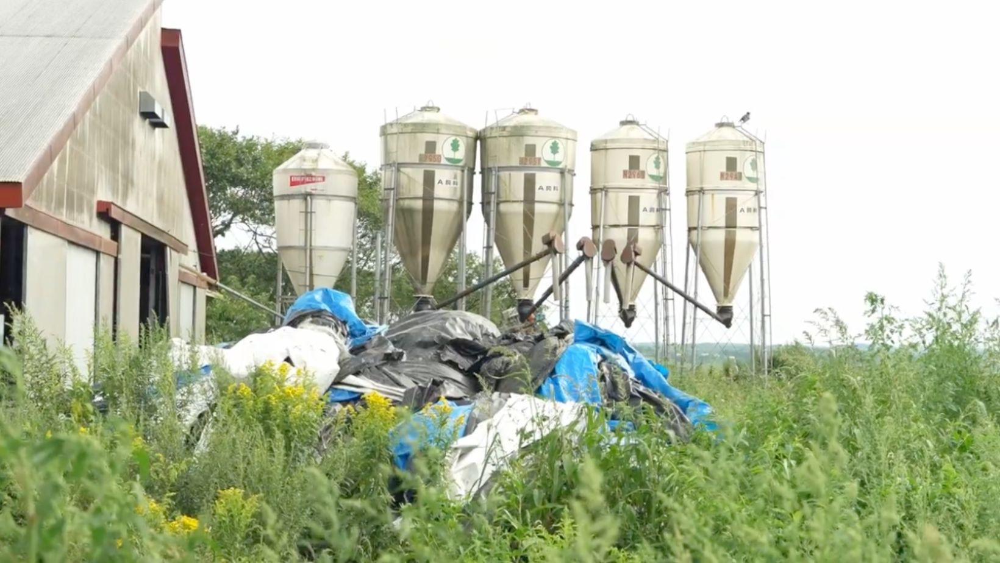
ラップも、タイヤも、鉄くずも。
分け方がわからなくても大丈夫。
RiPROのトラックが、毎月あなたの牧場へ。
「捨てると公害、活かせば資源。」
PROBLEM
牧場経営で、こんな声をよく伺います。
片付けたいけれど、どこに頼めばいいかわからない。気づけば敷地の片隅に山積み。
ラップ、タイヤ、鉄くず…品目ごとに別の業者へ出すのは手間がかかる。
牛の世話に搾乳、餌やり。廃棄物を運ぶ余裕なんて正直ない。
いくらかかるか分からないと、問い合わせも一歩踏み出せない。
何をどう分ければよいか、気軽に聞ける相手もなかなかいない。
知らない業者に任せて、本当に適正に処理されるのか心配。
そのお悩み、RiPROの定期集荷がまるごと解決します。
MERIT
「ためない・まよわない・はこばない。」
牧場の暮らしに寄り添う仕組みです。
毎月決まった日にトラックが伺います。廃棄物が溜まる前に回収するから、敷地はいつもすっきり。景観も衛生環境も保てます。
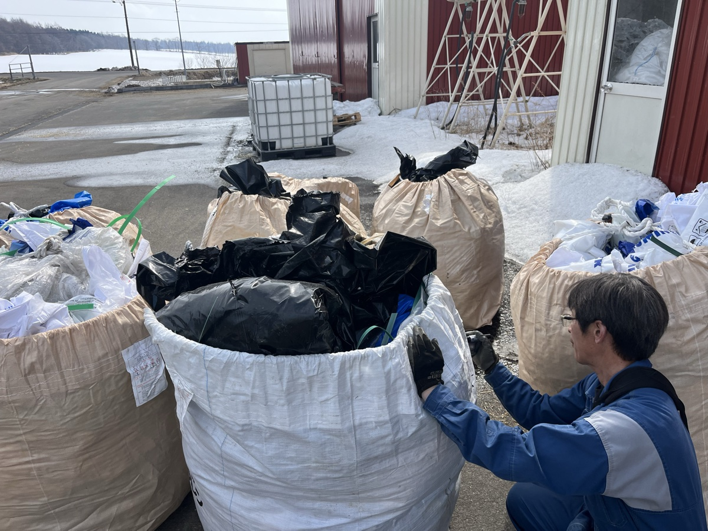
「何がラップで、何が硬プラ？」そんな疑問も、回収スタッフが現場で直接ご説明。分別していただくと処分費を抑えることができます。
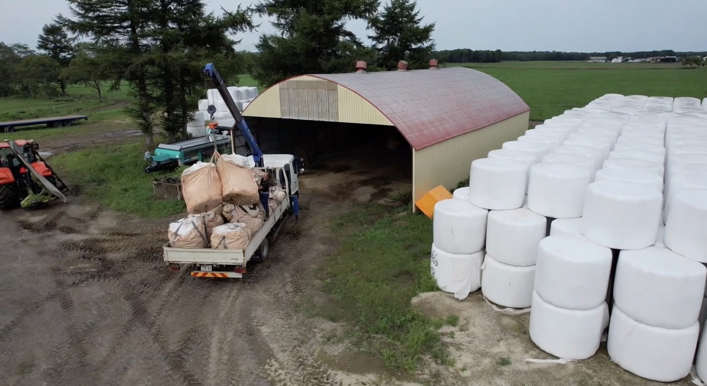
敷地内の集積場所までトラックで伺います。重たい廃タイヤも、大量のラップも、積み込みは全部お任せください。
SERVICE
カードをタップすると詳細と注意事項をご覧いただけます。
※ 別途 収集運搬費 1回 5,500円がかかります。
POINT
品目ごとに単価が異なります。分け方がわからなくても、回収スタッフが現場でお教えします。
一般廃棄物は各町の対応となります
注射器・針・点滴・薬品容器など
PRICE
品目と量を入力すると、1回あたりの概算が自動で計算されます。
RECYCLE
別海で回収したラップは、海を渡って
道路資材として生まれ変わります。
リプロが集めた農業廃棄物は、町外で燃やされて終わりではありません。
一部は別海町内のグリーンアース工場で再生原料（ペレット）に生まれ変わり、海を渡って新しい製品になります。
回収から再原料化までを地元で完結できる体制を整えています。
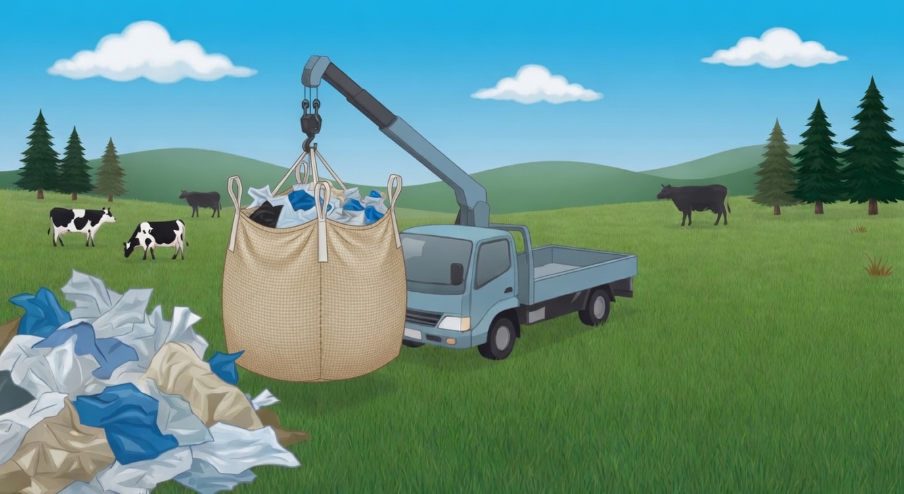
01 別海町内契約農家を毎月定期巡回。フレコンバッグ等に詰められたラップやプラ類を、クレーン付きトラックでまとめて引き取ります。
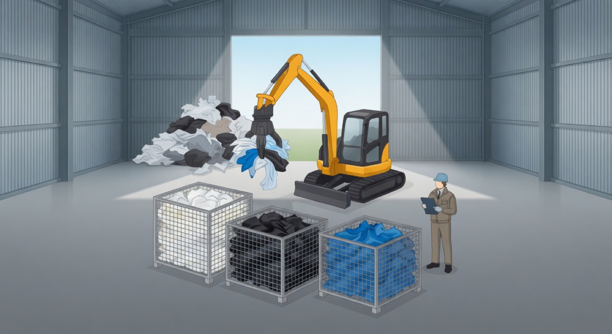
02 別海町内自社倉庫でラップ・ネット・シートなどを重機と目視で仕分け。後工程の品質を決める、一番大事な工程です。
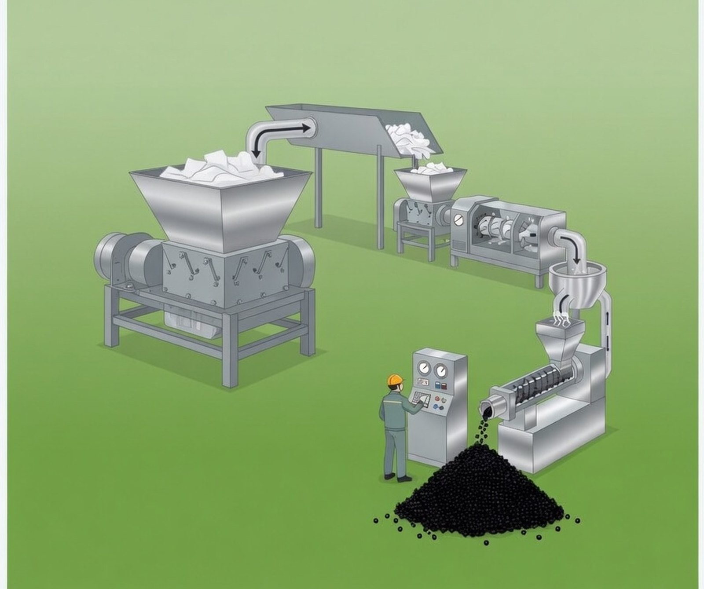
03 別海町内回収した一部のラップは、町内のグリーンアース工場で、分別済みの廃プラを破砕・溶融・押出し、黒い再生ペレットに。回収から再原料化までを別海町内で完結させています。
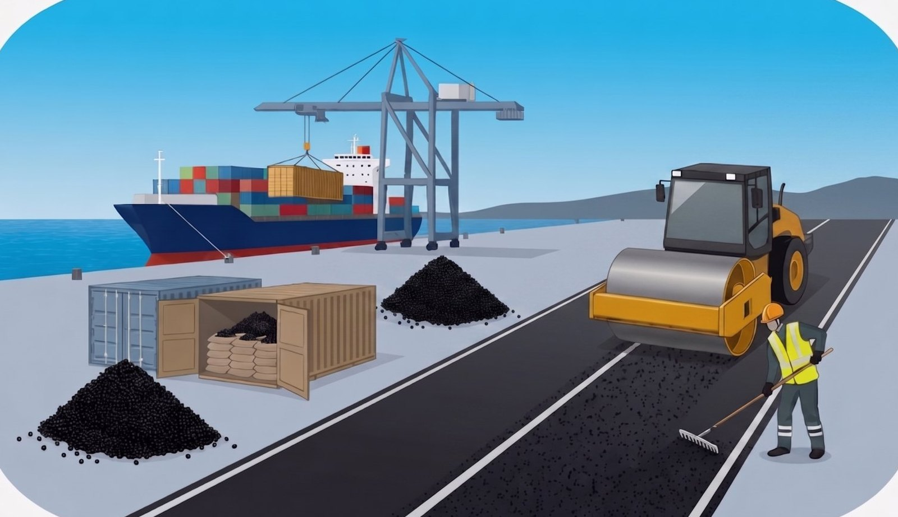
04 世界へ港から海外へ出荷された再生ペレットは、現地で舗装道路の下地資材として再利用され、インフラを支える素材に。
私たちが引き受けるのは「ゴミ」ではなく、
「まだ使える資源」です。
分別にご協力いただくほど、
循環の輪は確実に広がっていきます。
※ ご紹介した処理工程は再資源化の一例です。品目や状態によっては、町外のリサイクル業者や発電施設での処理になる場合もあります。
CLEANUP
「いっちょ、ここらで
綺麗にしとこうかな。」
月1回の定期回収とは別の、一度きりでも頼める一括回収サービスです。
何年も溜まったままの廃プラ・古タイヤ・農機具などを、
RiPROがまるごと片付けます。
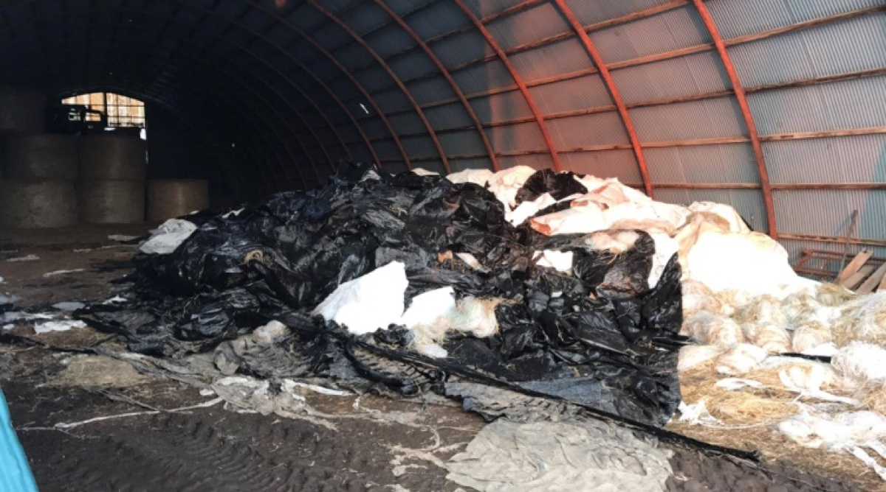
敷地の隅に何年も
廃プラが山積み
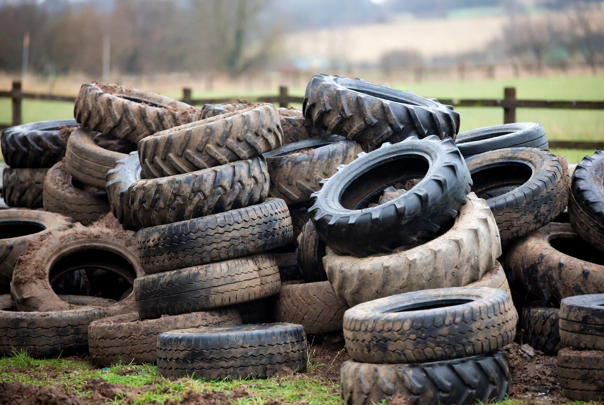
古タイヤがあちこちに
転がっている
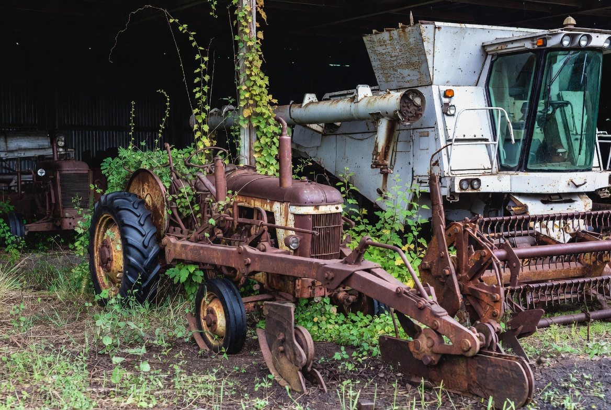
使わなくなった農機具が
雨ざらしのまま
来客や視察のたびに
気になっている
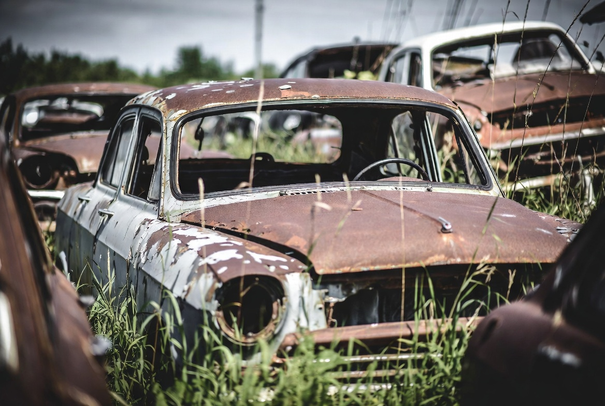
一人で片付けるには
重すぎる・量が多すぎる
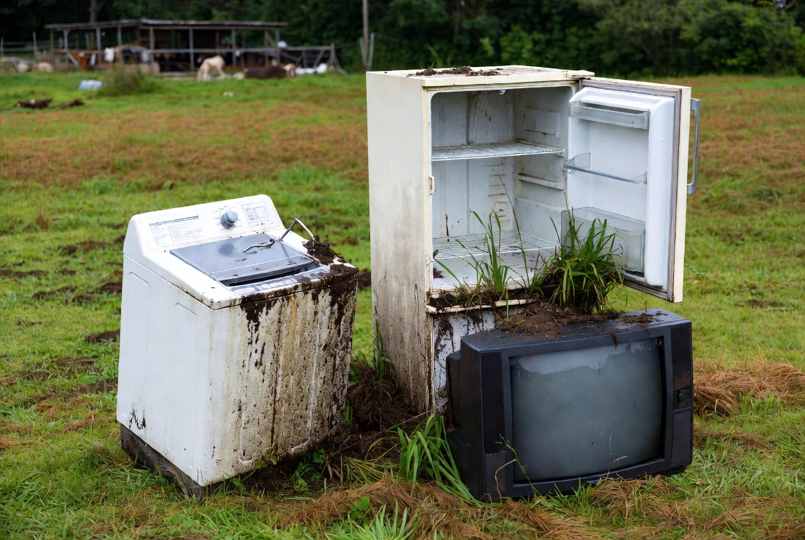
どこに頼めばいいか
わからない
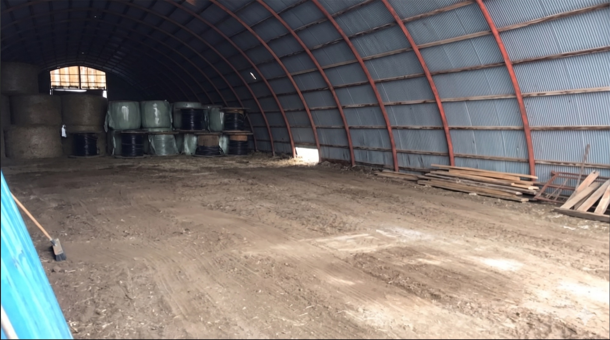
AFTER牛舎裏に溜め続けた廃プラと古タイヤをまとめて搬出。2名・約1日で完了しました。クリーンアップ後は月1回の定期集荷で、きれいな状態をキープ中です。
電話1本から、最短1〜2週間で
クリーンアップ完了。
「廃プラがこれくらい溜まってる」と一言伝えるだけでOK。匿名相談も歓迎します。
スタッフが牧場へ伺い、量・必要な機材・所要時間・料金の目安をその場でご案内します。
ご都合のよい日に作業を実施。通常1〜2週間以内で調整可能です。
多くは1日で完了。そのまま月1回の定期集荷へ移行すれば、もう二度と溜まりません。
機械代は別途。現地確認のうえご提案いたします。
VOICE
実際にご利用いただいている酪農家のみなさまから。
毎月決まった日に来てくれるので、こちらから連絡して依頼する手間がない。いつの間にか敷地がきれいになっていて助かっています。
長年溜まっていた廃プラと古タイヤをまるごと片付けてもらえた。敷地の景観が良くなって、来客のときも気にならなくなった。
こちらの都合に合わせて現地を見に来てくれた。分け方も現場で教えてくれて、他と比べても分別すれば安い。もっと早く頼めばよかった。
FLOW
お電話1本から、最短2週間で定期集荷スタート。
廃棄物の種類や量、気になることをお伺いします。匿名のご相談も歓迎。
スタッフが牧場へ直接伺い、現地で分別方法と料金の目安をご案内します。
産業廃棄物処理委託契約書を締結し、定期集荷の開始日を決めます。
毎月決まった日にトラックが伺います。あとはお任せください。
MOVIE
実際の集荷作業と再資源化の現場をご覧ください。
FAQ
別海町全域に対応しております。近隣の中標津町、標津町、根室市などもご相談可能です。エリア外でも品目や量によってはお伺いできる場合がありますので、まずはお電話ください。
もちろん混合でも回収いたします（混合廃棄物 132円/kg）。分けていただくと処分費を抑えられます（軟プラ・木くずは66円/kg〜）。回収スタッフがその場で分け方をご説明しますので、まずは出せる範囲でチャレンジしていただくのがおすすめです。
毎月1回が基本ですが、量が多い月は月2回など、ご相談に応じて調整可能です。急な量増にもできる限り対応いたします。
銀行振込・請求書払いに対応しております。また、地域によってはくみかん（農協の組合勘定）へのご請求にも対応しています。定期契約の場合は月末締め翌月末払いが基本です。ご希望の締め日・支払日があれば遠慮なくお伝えください。
ABOUT
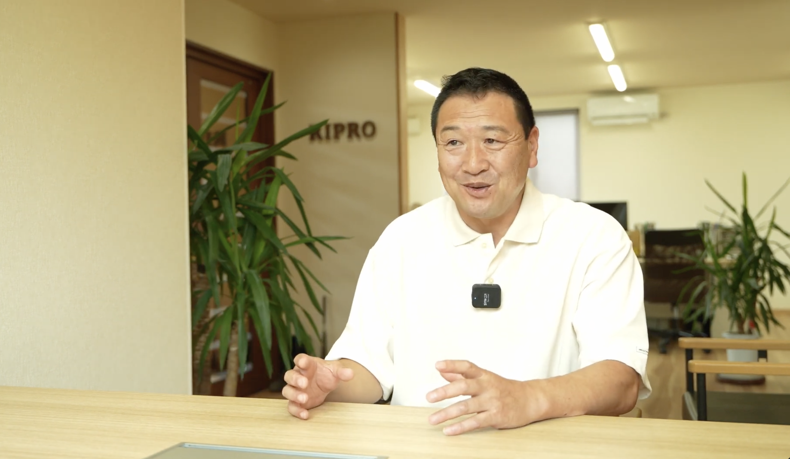
代表挨拶
株式会社RiPRO代表の八木一洋です。
別海町で農業廃棄物の回収を行っています。
捨てるだけでなく、活かす。
地域で出たものを地域で循環させることを大切にしています。
お困りのことがあれば、まずは一声おかけください。
代表取締役 八木 一洋
| 会社名 | 株式会社RiPRO（リプロ） |
|---|---|
| 代表者 | 代表取締役 八木 一洋 |
| 所在地 | 〒086-0216 北海道野付郡別海町別海279番地1 |
| TEL / FAX | 0153-79-5005 ／ 0153-79-5006 |
| 事業内容 | 産業廃棄物の収集運搬・処分・再資源化 |
| 許可番号 |
産業廃棄物収集運搬業：許可番号第 00110197993号 産業廃棄物処分業：許可番号第 00120197993号 古物商：北海道公安委員会許可 第134050000213号 金属くず商：北海道公安委員会許可（金）第134050000011号 |
CONTACT
ご相談無料。
まずはお気軽にご連絡ください。